モデラ (LWM) を使って作成したオブジェクト（形状）を動かして、 アニメーションを作ってみます。アイコンカタログの Applications のタブから、 LW を起動してください。コンソールか UNIX シェルから LW というコマンドを実行しても構いません。
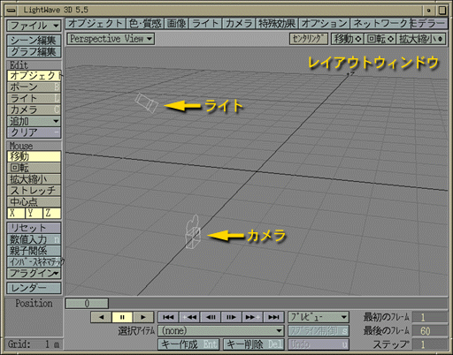
マス目のようなものが表示されている部分を レイアウトウィンドウ といい、ここにオブジェクトを配置していきます。 このマス目は基準平面で、 XZ 平面上の Y=0 の位置にあります。 中心が原点になっています。
| LW がデモモードで起動したとき |
|---|
|
LWM の場合と同様、LW も O2 の起動直後に起動すると、 デモモードにになってしまうことがあります。 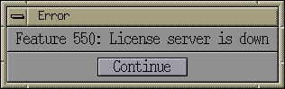 こうなるとせっかく作成したシーンファイルが保存できず、 悲しい思いをすることがあります。 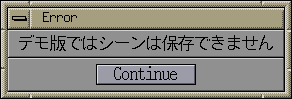 デモモードになってしまったときには、 上のような警告のウィンドウが現われますから、 そのときは一旦 LW を終了して、 しばらく（２～５分くらい？）待ってからもう一度 LW を起動してください。 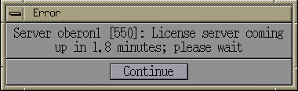 上の警告の場合は、そのまましばらく待っていればいいんじゃないでしょうか。 |
実際にＣＧムービーの作成に入る前に、 LightWave で取り扱うもっとも基本的なファイルである オブジェクトファイルと シーンファイル の関係について説明します。
| オブジェクトファイル | モデラ (LWM) で作成した、物体形状のデータファイルです。 ファイル名には .lwo という拡張子を付けます。 |
| シーンファイル | レイアウト (LW) で作成する、シーンの記述ファイルです。 ファイル名には .lws という拡張子を付けます。 |
レイアウトは複数のオブジェクトファイルを読み込んで、 それらを作成するＣＧの空間に配置（レイアウト）します。 アニメーションを作成するためのオブジェクトの動きや、 オブジェクトの（より詳細な）色や質感の設定を行います。
したがってシーンファイルには、 シーン中にどのオブジェクト（ファイル）が使用されているか、 またそれらがどういう位置関係にあるかといった情報が保存されています。
オブジェクトファイルは、言わばＣＧシーンへの出演者です。 レイアウトが出演者の「ステージ」になります。 独立して動くオブジェクトは、 それぞれ別々のオブジェクトとしてモデリングし、 レイアウトの上でそれらを組み合わせます。 ロボットのように関節を持つ場合も、 骨格ごとに部品として別々にモデリングします。
実は結構凝ったシーンのサンプルデータが既に用意されているのですが、 ここではとりあえず自分でシーンファイルを作ってみましょう。 ウィンドウの上の方にある "オブジェクト" のボタンをクリックしてください。
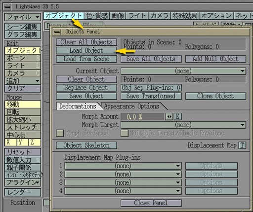
オブジェクトの設定ウィンドウが現れます。 このウィンドウの "Load Object" のボタンをクリックしてください。 読み込むオブジェクトファイルを指定するダイアログウィンドウが現れます。
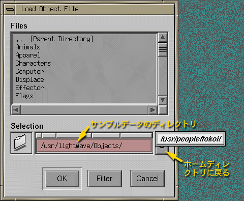
おそらく、今は /usr/lightwave/objects というディレクトリの一覧を表示していると思います。 この中にいろいろなサンプルデータがあります。 これらは今後自分でＣＧを作成する時に活用してください。
ここでは前回モデラ (LWM) で作成した形状を読み込みます。 ファイル名の入力欄の右側にある、 「回転する矢印」みたいなボタンをクリックしてください。 自分のホームディレクトリ名がポップアップしますので、 それを選んでください。
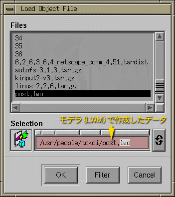
自分のホームディレクトリの中にあるオブジェクトファイルを探して、 選択してください。"OK" をクリックすれば、そのオブジェクトが読み込まれます。 ファイル名の最初の数文字タイプすれば、残りが補完されますから、 そこで [Enter] をタイプしてください。 そのあと "Object Panel" ウインドウの一番下にある "Close Panel" ボタンをクリックしてください。
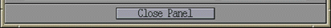
レイアウトウィンドウに読み込んだオブジェクトが現われます。 複数のオブジェクトを配置するときは、この作業を繰り返してください。
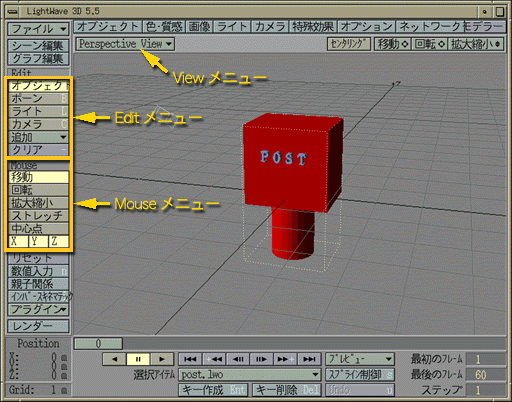
レイアウトウィンドウの左側に、"Edit" "Mouse" と分類されたいくつかのボタンがあります。また、 左上には "... View" 書かれたボタンがあります。
| View | レイアウトウィンドウにどこから見た画像を表示するかを指定します。これはポップアップメニューです。 |
| Edit | 操作の対象を指定します。 |
| Mouse | マウスの操作をどのように反映させるかを指定します。 |
たとえば "Edit" グループの "オブジェクト" ボタンが選択されていると、 マウス（またはレイアウトウィンドウの下にある "選択アイテム" のポップアップメニュー）で選択したオブジェクトを、 マウスのドラッグで動かすことができます。 この動きは、"Mouse" グループの“移動”ボタンが選択されていれば平行移動、 “回転”ボタンが選択されていれば回転になります。
一方、レイアウトウィンドウの右上にある“移動”“回転”“拡大縮小”は、 レイアウトウィンドウの表示を変更します。 これらのボタンをクリックして、 そのままマウスのボタンを離さずにマウスをドラッグします。 このとき、"View" グループで“ライト"や“カメラ”のボタンが選択されていると、 レイアウトウィンドウの表示にあわせて光源やカメラの位置や方向も変化します。 拡大縮小については、レイアウトと同様に ,（コンマ） .（ピリオド）も使えます。
"数値入力" のボタンは、マウスによる操作の代りに、 キーボードからの数値入力でオブジェクトの位置などを設定します。 正確な配置をしたいときなどに使います。
| View | |
|---|---|
| Front | 正面から見たときの平行投影、 つまり Z=-∞ から Z=+∞ を見たときの画像です。 |
| Top | 上から見たときの平行投影、つまり Y=+∞ から Z=-∞ を見たときの画像です。 |
| Side | 横から見たときの平行投影、つまり X=+∞ から X=-∞ を見たときの画像です。 |
| Perspective | 任意の視点からの透視投影です。 |
| Light | 光源の位置から見たときの透視投影です。 |
| Camera | カメラの位置から見たときの透視投影です。 |
| Edit | |
|---|---|
| オブジェクト | オブジェクトを動かします。オブジェクトの選択は、 ウィンドウの下にある "Selected Item" のポップアップメニューで行います。 |
| ボーン | ボーンは関節を持つオブジェクトのアニメーションを記述するために使う、骨格のデータです。これも“選択アイテム” のポップアップメニューを使って選択します。 |
| ライト | 光源を選択します。これも“選択アイテム” のポップアップメニューを使って選択します。 |
| カメラ | カメラを選択します。 カメラから見たものが、 作成する画像になります。 |
| Mouse | |
|---|---|
| 移動 | 平行移動します。 左ボタンで前後 (Z) 左右 (X)、右ボタンで上下 (Y) に移動します。 この下の [X], [Y], [Z] のボタンで選択されている方向だけに移動します。 |
| 回転 | 回転します。 左ボタンで水平 (H) 垂直 (P) 方向に回転、右ボタンで傾き (B) ます。 この下の [H], [P], [B] のボタンで選択されている方向だけに回転します。 |
| 拡大縮小 | 全体のサイズを拡大縮小します。 |
| ストレッチ | オブジェクトを一方向に伸ばします。 |
| 中心点 | "Edit" で“オブジェクト” が選ばれているときに選択できます。 オブジェクトの中心点（レイアウトウィンドウ上では×印、 回転や拡大縮小の基準点）を移動します。 この点は、最初そのオブジェクトの、 モデラでの原点になっています。 |
| 固定長 | "Edit" で "ボーン" が選ばれているときに現れます。 骨格（ボーン）の長さを指定します。 |
| コーンアングル | "Edit" で "ライト" が選ばれているときに現れます。 ライトが Spot Light（レイアウトウィンドウの上の“ライト” ボタンで設定します）のときの光源の広がりを制御します。 |
| X Y Z | "Mouse" で“移動”や“拡大縮小”“ストレッチ” などが選ばれているときに現れます。 選択されているボタンの方向だけに移動／拡大縮小／ストレッチできます。 |
| H P B | "Mouse" で“回転”が選ばれているときに現れます。 選択されているボタンの方向だけに回転できます。 H (Heading) は Y 軸回り、P (Pitch) は X 軸回り、 B (Bank) は Z 軸回りの回転です。 |
なお、回転角や拡大率のような一次元の量は、 マウスを右に動かすほど大きくなります。
このポストを動かしてみましょう。View メニューを "Top (XZ) View" に切り替えてください。
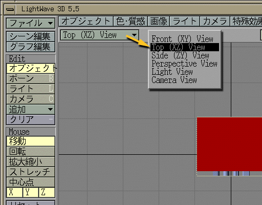
レイアウトウィンドウの右上の“拡大縮小”ボタンを使う （クリックして、そのままボタンを離さずにマウスを前後にドラッグする） か、,（コンマ）と .（ピリオド）を使って、 基準面全体がレイアウトウィンドウ内に収まるようにしてください。
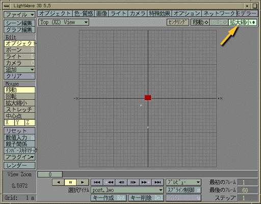
レイアウトウィンドウのすぐ下にある“スライダ”は、 画像を生成するフレーム番号を示します。 フレームは動画を構成している連続した静止画の１枚のことです。
これから最初のフレームのレイアウトを行います。
なお、移動を取消すにはレイアウトウィンドウの下にある "Undo Move" ボタンをクリックしてください （ボタンは "Redo Move" になり、 もう一度クリックすると移動の取消しを取り消すことができます）。 また“リセット”ボタンで設定を初期化 （レイアウトによる変更をすべて取り消し）します。
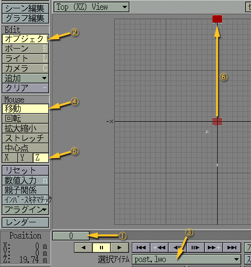
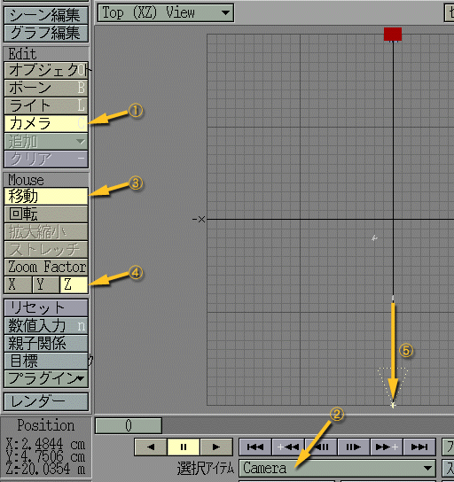
オブジェクトやカメラの配置が決まったら、 この配置を登録した“キー”を作成します。 [Enter] をタイプするか、 レイアウトウィンドウの下の“キー作成”のボタンをクリックしてください。
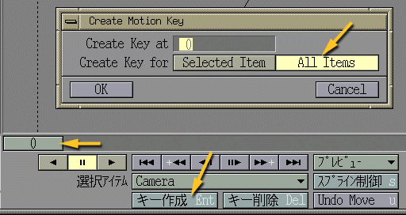
このフレーム (0) では、 シーンに含まれるすべてのアイテムについてキーを作成しますので、 "All Items" を選択してから "OK" をクリックしてください。
今度は最後のフレームのレイアウトを行います。
アイテムを動かすと、 前のキーの位置から「糸を引く」ように軌跡が表示されます。 これをモーションパスと呼びます。 アイテムはこれに沿って移動します。
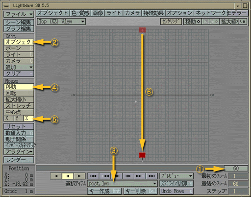
このフレーム (60) にキーを作成します。 [Enter] をタイプするか“キー作成”をクリックしてください。 ここでは「ポスト」だけを動かしますので、 "Selected Item" を選択して "OK" をクリックしてください。
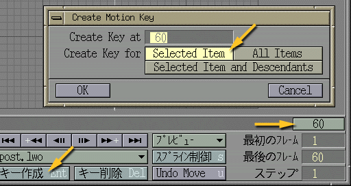
このようにアニメーションの基準となるフレームのことを、 キーフレームと呼びます。 あるキーフレームから次のキーフレームに向かって、 シーンが連続的に変化するよう間のフレームを生成して、 アニメーションを作成します。 この作業を「中割り（インビットウィーン）」と呼びます。
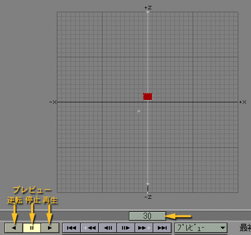
この状態でフレームのスライダを動かすと、 それにつれてレイアウトが変化すると思います。 また、プレビューのボタンを使えば、 動きを繰り返し再生できます。
レイアウトウィンドウの左上の "View" のポップアップメニューを切り替えて、 いろんな視点から動きを確認してみてください。
アニメーションの中程のフレームにキーを追加してみましょう。 "Top (XZ) View" に切り替えて、 フレームのスライダを中央あたりに移動してください。 そこで「ポスト」を少し左にずらします。 オブジェクトが前後方向にずれないように、 X だけを選択しておくといいと思います。
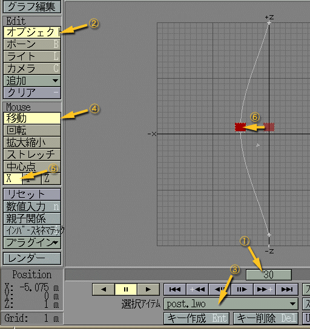
アイテムの移動に伴って、モーションパスがなめらかに変形したと思います。 角張った動きをさせたいときなどは“スプライン制御”を使ってください （説明は省略します）。
"Front (XY) View" に切り替えて、 今度はポストを少し上に上げてください。
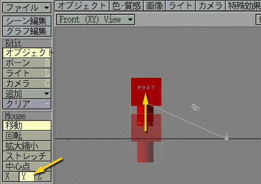
このフレームで、「ポスト」 のキーを作成します。
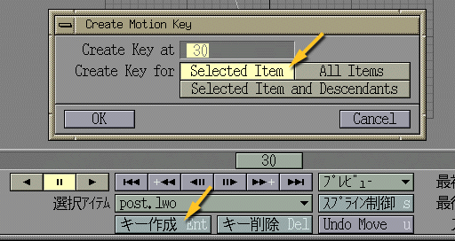
フレームのスライダを動かして、動きを確認してください。 "View" を切り替えて、いろんな視点から見てみましょう。
以上でシーンファイルが作成できました。 “ファイル”のポップアップメニューから "Save Scene" を選んでシーンファイルを保存してください。
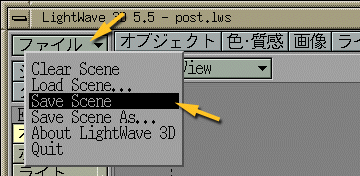
シーンファイルはホームディレクトリに保存し、 ファイル名の拡張子は .lws にしておいてください。
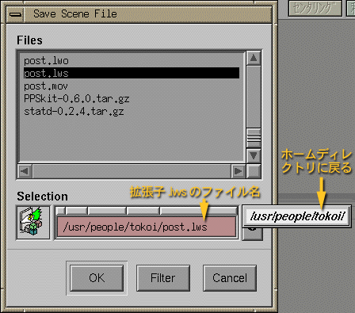
このシーンのアニメーション（ムービー）を作成してみましょう。
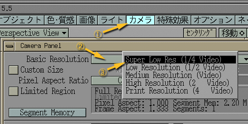
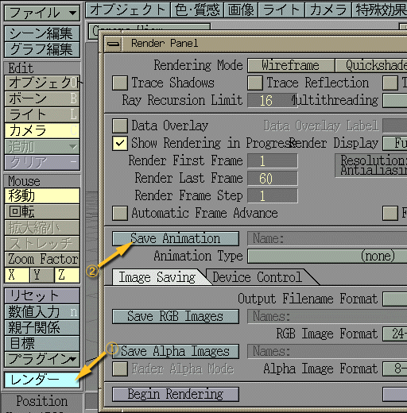
"Save Animation" のダイアログウィンドウで、 "Selection" 欄の内容を /tmp/post.mov[Enter] に書き換えてください。
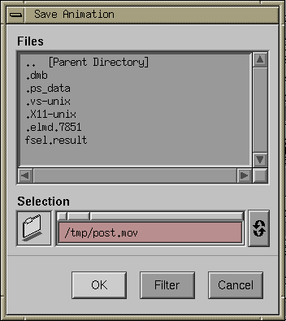
"Animation Type" として、SGI_Quicktime を選んでください。
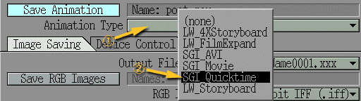
データの圧縮などの設定のウィンドウが現われます。 何も変更せずに "OK" をクリックしてください （Frame per second が 15 になっているので、 アニメーションの長さは４秒になります）。
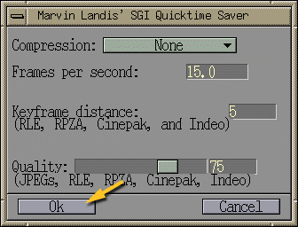
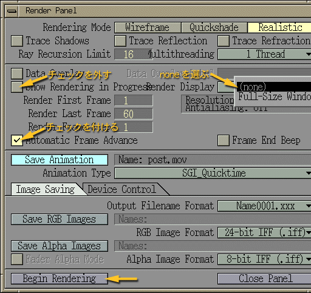
レンダリングが完了したら、 レイアウトを終了しましょう。 “ファイル”のポップアップメニューから "Quit" を選んでください。
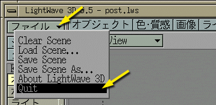
"Quit" というウィンドウが現れたら、 "Yes" のボタンをクリックしてください。
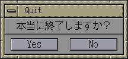
出来上がったムービーファイル post.mov は、 /tmp というディレクトリにあります。 このムービーを見てみましょう。 コンソールか UNIX シェルで movieplayer というコマンドを起動してください。
% movieplayer /tmp/post.mov[Enter] |
アニメーションが表示されたでしょうか？
このファイルを保存しておきたいなら、 それを自分のホームディレクトリに移動してください。
% mv /tmp/post.mov ~[Enter] |
~ は自分のホームディレクトリのパスと等価です。
ちなみに、 /tmp はテンポラリファイル（一時的に作成するファイル）を置くディレクトリで、 誰でもファイルを置くことができますが、 コンピュータを停止させると内容が消去されます。 ムービーファイルをここに保存する理由は、 みんなが一斉にホームディレクトリにムービーファイルを作成すると、 サーバに大きな負荷をかけてまともに動かなくなる恐れがあるからです。
ポストが回転しながら飛んでくるようなアニメーションを作成してください。 あるいは、自分で何か短いアニメーションをつくってください。